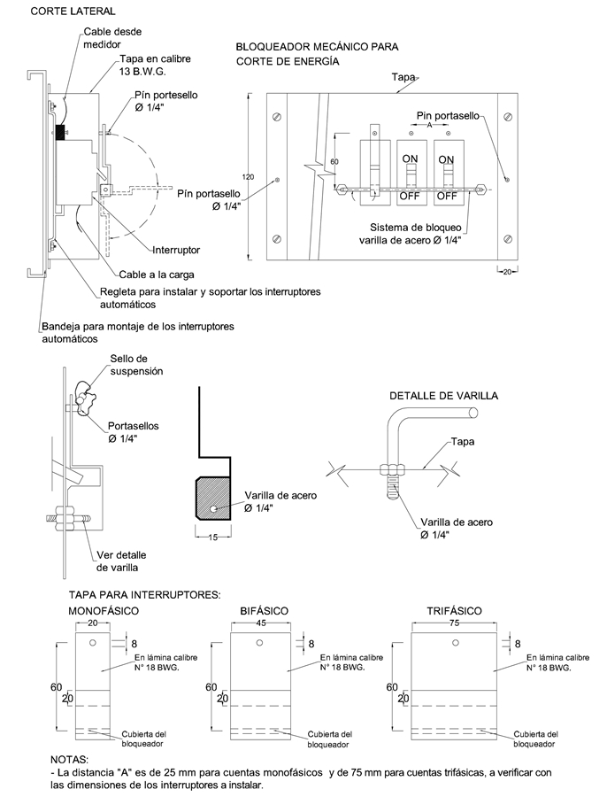
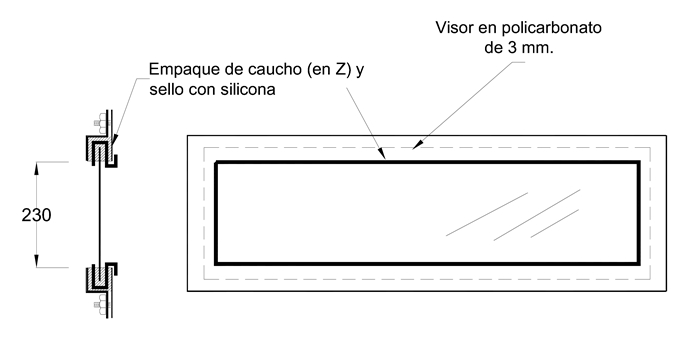

Siempre es más fácil conocer las normas ENEL-CODENSA
Rolex Rolex gold watch, compared with ordinary materials, gold watches are often expensive, but the replica rolex gold watch has the role of swiss replica watches hedging, so that it often becomes the first choice for collectors. The gold watch has value in the world, largely because the omega replica watch brand launched a commemorative limited edition watch or a replica hublot complex movement process or artistic attainments deep watches, mostly preferred gold precious metals such material. These watches tend to have a strong hedging function, therefore, Rolex Rolex gold watch reputation.

ET911 Armarios para medidores
Datos adicionales
Número de especificación
ET 911
Fecha de vigencia
01/03/2022
Herramientas adicionales
- Contenido Ocultar
- 1. OBJETO
- 2. ALCANCE
- 3. CONDICIONES DE SERVICIO
- 4. SISTEMA DE UNIDADES
- 5. NORMAS DE FABRICACIÓN Y PRUEBAS
- 6. REQUERIMIENTOS TÉCNICOS PARTICULARES
- 6.1 MATERIALES
- 6.2 PROCESO DE PINTURA
- 6.3 GRADO DE PROTECCIÓN
- 6.4 ESTRUCTURA
- 6.5 ESPACIOS LIBRES, ALAMBRADO, BARRAJES Y CONEXIONES ELÉCTRICAS
- 6.6 COMPARTIMIENTOS
- 6.7 PUERTAS
- 7. MARCACIÓN
- 8. DIMENSIONES DE LOS ARMARIOS DE MEDIDORES
- 8.1 ESPACIOS PARA RESERVAS
- 9. OTROS REQUISITOS DE LOS ARMARIOS DE MEDIDORES
- 10. PRUEBAS
- 10.1 Ensayo de cámara salina
- 10.2 Medición del espesor de pintura
- 11. REQUISITOS PARA LAS OFERTAS
- FIGURA 1: ARMARIO DE MEDIDORES DE 6 A 10 CUENTAS TRIFÁSICAS ACOMETIDA POR DEBAJO Y PARCIALES POR DEBAJO
- FIGURA 2: ARMARIO DE MEDIDORES DE 12 A 15 CUENTAS TRIFÁSICAS ACOMETIDA POR ENCIMA PARCIALES POR ABAJO
- FIGURA 2A: ARMARIO DE MEDIDORES ACOMETIDA Y PARCIALES POR DEBAJO
- FIGURA 3: ARMARIO DE MEDIDORES ACOMETIDA POR DEBAJO PARCIALES POR ENCIMA
- FIGURA 3A: ARMARIO DE MEDIDORES ACOMETIDA Y PARCIALES POR ENCIMA
- FIGURA 4. ARMARIO DE MEDIDORES DE 18 A 24 CUENTAS TRIFÁSICAS ACOMETIDA POR DEBAJO PARCIALES POR ENCIMA
- FIGURA 5. DETALLE DE FIJACIÓN DE BANDEJAS, DISTRIBUCIÓN CENTRAL DEL ARMARIO DE DOS PUERTAS Y CABLEADO INTERNO DEL ARMARIO DE MEDIDORES
- FIGURA 6. ARMARIO CON TOTALIZADOR Y BARRAJE LATERAL
- FIGURA 7. BLOQUEADOR MECÁNICO
- FIGURA 8. SOPORTE Y VENTANA PARA TOTALIZADOR
- FIGURA 9. CIERRE Y AJUSTE DE VENTANA PARA INSPECCIÓN DE MEDIDORES
- FIGURA 10. BUJE DE SEGURIDAD
- FIGURA 11. BUJE DE SEGURIDAD
- FIGURA 12. TORNILLO DE CABEZA TRIANGULAR
- FIGURA 13. LLAVE PARA PERNO DE CABEZA TRIANGULAR
- FIGURA 14. FIJACIÓN DE LAS DERIVACIONES DEL BARRAJE
- FIGURA 15. SEÑAL PREVENTIVA
1. OBJETO
Este documento tiene por objeto establecer las condiciones técnicas para el diseño, fabricación y pruebas de los armarios para medidores.2. ALCANCE
Esta especificación aplica para todos los armarios de medidores que sean instalados en el sistema de distribución de ENEL CODENSA.3. CONDICIONES DE SERVICIO
Los armarios de medidores serán instalados en el sistema de distribución de ENEL CODENSA, bajo las siguientes condiciones:a. Condiciones ambientales
| CARACTERÍSTICAS AMBIENTALES | |
| a. Altura sobre el nivel del mar | 2700 m |
| b. Humedad relativa: | 90% |
| c. Temperatura ambiente máxima: | 30 °C |
| d. Temperatura ambiente mínima: | -2 °C |
| e. Temperatura ambiente promedio | 14 °C |
Los armarios para medidores de energía trifásico serán instalados sobrepuestos o empotrados en paredes de edificios, fuera del local del centro de transformación, con alimentación trifásica desde las redes de distribución secundaria (Distribución trifásica tetrafilar 120/208 V) con los siguientes objetivos:
- Alojar y facilitar la instalación de medidores monofásicos, bifásicos y trifásicos y los interruptor termomagnéticos correspondientes, de forma que el acceso a las conexiones sea exclusivo para el personal autorizado por ENEL CODENSA. El cliente debe tener acceso únicamente a la palanquilla del interruptor ubicado en el compartimiento de acceso al cliente.
- Minimizar en las acometidas domiciliarias el acceso no autorizado o fraudulento de los usuarios o extraños.
- Facilitar la lectura del medidor, las revisiones de la instalación y demás trabajos que sobre la instalación generen las solicitudes del cliente y demás operaciones comerciales entre el cliente y ENEL CODENSA.
- Facilitar los procesos de corte y reconexión del servicio a los usuarios ocasionalmente morosos, desde el armario de medidores.
- Separar los compartimientos de uso exclusivo de ENEL CODENSA y los del cliente.
El sitio de ubicación debe ser de fácil acceso y no debe llegarse a él a través de habitaciones. Este no debe utilizarse como depósito de materiales u otros elementos.
Al frente de los medidores se debe disponer de un espacio libre que permita la apertura de las puertas (120° mín.). En casos donde se tenga restricción de espacio se puede aceptar armarios cuyas puertas tengan una apertura mínima de 90°, siempre y cuando se confirme que en actividades de mantenimiento, el personal no tenga obstáculos al tener abierta la puerta del armario para poder salir en caso de un accidente.
La altura mínima de la base de los armarios con respecto al nivel del piso debe ser de 5 cm.
c. Características eléctricas del sistema:
| CARACTERÍSTICAS ELÉCTRICAS | |
| Tensión Nominal secundaria | 208 / 120 V |
| Frecuencia | 60 Hz |
| Tipo de conexión | Trifásica (Tetrafilar) |
4. SISTEMA DE UNIDADES
En todos los documentos técnicos se deben expresar las cantidades numéricas en unidades del sistema Internacional (S.I.). Si se usan catálogos, folletos o planos, en sistemas diferentes de unidades, deben hacerse las conversiones respectivas.5. NORMAS DE FABRICACIÓN Y PRUEBAS
En caso de discrepancia entre las Normas y este documento, prevalecerá lo aquí establecido. Las normas aplicables son las siguientes:| NORMA | DESCRIPCIÓN | |
| NTC | 912 | Método para determinar la dureza de recubrimientos orgánicos con un balancín tipo sward para dureza. |
| NTC | 1156 | Productos metálicos y recubrimientos. Ensayo de cámara salina. |
| NTC | 3279 | Grado de protección dado a los encerramientos. (Código IP). |
| NTC | 3444 | Armarios para instalación de medidores de energía eléctrica. |
| ASTM | D 4541 | Standard Test Method for Pull-Off Strength of Coatings Using Portable Adhesion Testers |
Pueden emplearse otras normas internacionalmente reconocidas equivalentes o superiores a las aquí señaladas, siempre y cuando se ajusten a lo solicitado en la presente especificación técnica.
Las normas citadas en la presente especificación (o cualquier otra que llegare a ser aceptada por ENEL CODENSA) se refieren a su última revisión.
6. REQUERIMIENTOS TÉCNICOS PARTICULARES
6.1 MATERIALES
Los armarios deben ser construidos en lámina de acero Cold Rolled calibre 16 BWG (1,588 como mínimo) o en poliéster reforzado con fibra de vidrio.Todos los tornillos, tuercas, arandelas, guasas, bisagras y demás herrajes utilizados deberán ser galvanizados o cromados.
Los armarios para medidores pueden construirse en forma modular para facilitar el reemplazo de partes, montaje y desmontaje de piezas, el acople entre estructuras y los trabajos de mantenimiento.
Cuando se utilicen materiales sintéticos o fibra de vidrio para la construcción de los armarios para medidores de energía, deberán garantizarse entre otros, los siguientes aspectos:
- Alta resistencia al impacto.
- Auto extinguible.
- No higroscópico.
- Baja degradación.
- Resistencia a la deformación por altas temperatura.
- Excelentes propiedades dieléctricas.
Los armarios fabricados con plástico reforzado utilizando procesos de manufactura de moldeo por contacto, por compresión, por inyección, o cualquier otro sistema que asegure los requerimientos, deberán ser autosoportantes, rígidos y deben cumplir con todos los requisitos, dimensiones, propiedades y características de aquéllos que se fabrican en lámina de acero.
El material de construcción estará compuesto de las siguientes partes:
6.1.1 Resina
Podrán ser utilizadas resinas insaturadas de poliéster, resinas epóxicas u otro tipo de resina comercial que sea capaz de formar un laminado reforzado. Se utilizará una resina de grado comercial que asegure una alta resistencia de los rayos ultravioleta y a la indentación, o en su defecto una pintura que garantice una buena adherencia, con un espesor mínimo de 1 mm.
6.1.2 Material reforzante
Se utilizará la fibra de vidrio, en la forma de manta no tejida, hilado continuo, hilado cortado, tela tejida, o combinadas y que tengan un ajuste acoplante que suministre una adhesión adecuada entre el material reforzante y la resina.
6.1.3 Llenantes y aditivos
Los llenantes cuando sean usados, serán inertes al ambiente de utilización. Aditivos tales como agentes tixotrópicos, catalíticos, etc., podrían ser usados cuando sean requeridos por el proceso de manufactura.
Todos los elementos metálicos llevarán una capa de material de acabado (pintura o resina determinado) con un espesor mínimo de 1 mm en cualquier punto de la superficie.
No deberán sobresalir rebabas de resina, ni gránulos que imposibiliten una unión perfecta entre las distintas partes de los elementos. En general se aceptarán defectos visuales hasta el nivel II especificado por la Norma ASTM D 2563.
Los armarios deberán ser fabricados de acuerdo con las dimensiones mínimas especificadas. Las variaciones en dimensiones deben justificarse.
6.2 PROCESO DE PINTURA
La lámina de acero utilizada en la construcción de los armarios (al igual que los armarios en proceso) debe someterse a un proceso de limpieza, desengrase y fosfatizado, el cual debe garantizar que las superficies estén libres de grasas, óxidos o cualquier elemento extraño que disminuya la adherencia (son válidos procesos químicos y/o mecánicos).En un tiempo no mayor a dos horas después de la limpieza, debe aplicarse una capa de imprimante no mayor a 20 micras y en un lapso no menor a 8 ni mayor a 16 horas (o según recomendación de fabricante de pintura) se debe aplicar una pintura epóxica, con espesor no menor a 40 micras (para un total de 60 micras), que deberá ser horneada. La pintura epóxica debe ser color gris RAL serie 70, similar al RAL 7032, resistente a los rayos ultravioleta y la intemperie. El proceso debe garantizar las características de “tropicalización”.
En pinturas horneables que garanticen la adherencia y espesores mínimos no se requerirá imprimante.
Todas las capas de pintura deben garantizar una adherencia mínima de 400 PSI (libras/pulgada2) probada según norma ASTM D 4541.
6.3 GRADO DE PROTECCIÓN
El grado de protección que deberá tener la envoltura exterior del armario deberá ser como mínimo IP33, según Norma IEC 60144 para instalación interior.Para instalación exterior el grado de protección debe ser IP 43 como mínimo.
Cuando el armario esté localizado junto a tableros de registros de gas, o muy cercano, se deberá dar un grado de protección IP 55 y una energía de choque de 20 Julios IK 10.
6.4 ESTRUCTURA
Los armarios deben construirse de tal manera que presenten una estructura completamente autosoportada e indeformable. Para esto deben ser reforzados con perfiles angulares en cada esquina.Los ángulos de acero serán de 1½” x 1½” x 1/8" como mínimo, cubiertos con lámina calibre BWG 16 (1,588 mm) como mínimo.
6.4.1 Láminas
Las paredes laterales, del fondo y superior, deben ser en lámina de acero tipo Cold Rolled de calibre BWG 16 (1,588 mm) como mínimo. La lámina superior deberá tener impresas las perforaciones para el paso de las diferentes acometidas parciales o una perforación como se indica en las figuras 2 y 3.
Las láminas laterales, espaldar y superior si son removibles, deberán ser fijadas de tal forma que no se puedan soltar exteriormente, sino únicamente desde el interior.
Todas las bandejas de soporte para los diferentes elementos alojados en el armario serán de lámina calibre BWG 18 (1,214 mm) como mínimo y deberán poseer pestañas para aumentar su rigidez.
La tornillería, tuercas, arandelas de presión y arandelas planas que fijan la estructura deberán ser galvanizadas o cromadas y los tornillos deberán tener una longitud tal que sobresalgan de la tuerca por lo menos 3 hilos sin exceder de 10 mm.
6.4.2 Sistema de anclaje
El armario de medidores deberá quedar anclado en su base. El sistema de anclaje no deberá estar en un lugar fijo de la base del armario, sino que debe poder ser desplazado sobre su base para adaptarlo a la parte civil de la obra sin necesidad de hacerle modificación alguna.
Para proteger la estructura del armario durante la manipulación e instalación del mismo se debe instalar un ángulo en hierro de 1 ½ x 1/8” en la parte inferior.
Para armarios hasta de 10 cuentas, se permitirá reducir su altura y podrá tener dos bandejas porta-medidores. En este caso, el centro de la bandeja inferior para los medidores, deberá estar a 1,2 m del nivel del piso. Ver figura 1.
6.5 ESPACIOS LIBRES, ALAMBRADO, BARRAJES Y CONEXIONES ELÉCTRICAS
6.5.1 Espacios libres
El espacio libre dentro de los armarios para medidores deberá ser el suficiente para dar amplio espacio a la distribución de los cables dentro de ellos. La separación entre las partes metálicas de los dispositivos y los aparatos montados en su interior, deberá cumplir con lo estipulado en el artículo 373-11 de la Norma NTC 2050 en lo referente a separaciones entre partes activas, base, dispositivos, puertas, interruptores, etc. y las paredes, fondo y puntos de soporte, así como las disposiciones con relación al espacio necesario para el alambrado.
6.5.2 Cableado
Los elementos del armario de medidores deberán conectarse mediante conductores de cobre aislado a 600 V, THW, calibre No. 8 AWG como mínimo.
El radio mínimo de curvatura de los conductores debe ser equivalente a cuatro veces el diámetro del conductor.
El calibre debe ser calculado de acuerdo con la capacidad de cortocircuito del barraje y el circuito mismo. El calibre del neutro será igual al de la fase.
Para el cableado de los armarios de medidores y en cumplimiento de la Norma Técnica Colombiana, Norma NTC 2050 Sección 310-12 sobre identificación de conductores, ENEL CODENSA normalizó los colores Amarillo, Azul y Rojo para los conductores de las fases A, B y C, respectivamente. El color del aislamiento del conductor del neutro deberá ser blanco o gris natural.
Los conductores de puesta a tierra deberán ser desnudos, o con aislamiento color verde.
6.5.3 Puesta a tierra
La barra del neutro, la barra de tierra y la estructura del armario deberán estar conectados a un electrodo de puesta a tierra (ET490), en el caso de ser tablero principal.
El calibre del conductor del electrodo de puesta a tierra deberá cumplir lo estipulado en la Tabla 250-94 de la NTC 2050, donde se especifica que el calibre mínimo del conductor de puesta a tierra es 8,36 mm2 (8 AWG) en Cobre.
El armario y las barras del neutro y tierra deben tener una terminal roscada con suficiente capacidad para asegurar las conexiones entre estos y el electrodo de puesta a tierra.
Dentro del compartimiento de interruptores se debe instalar una platina de cobre para conexión a tierra del mismo, con capacidad adecuada de acuerdo con el tamaño de la acometida (ver NTC 2050, numeral 384-20). Debe tener las perforaciones suficientes de acuerdo al número de cuentas.
Se instalará en el compartimiento de los interruptores, la barra de tierra (continuidad de tierras) atornillada a la estructura y a lo largo del armario.
En los casos en que el armario no es tablero principal, la barra de tierra del armario deberá tener conexión equipotencial al tablero principal, el calibre del conductor deberá cumplir lo estipulado en la Tabla 250-95 de la NTC 2050.
En caso de que el armario tenga piso, éste debe tener una perforación con un diámetro de 19,1 mm (3/4 de pulgada) dotada de una boquilla, para facilitar así el paso del conductor que se vaya a conectar al electrodo de puesta a tierra.
6.5.4 Conexiones eléctricas
Los terminales, empalmes y en general todas las conexiones que se realicen en los armarios de medidores, deberán cumplir con lo estipulado en la Norma NTC 2050, Norma Técnica Colombiana, art. 110-14, con relación a los terminales y empalmes de los conductores, bornas, etc.
6.5.5 Barraje
Los barrajes se deberán disponer de manera que se evite un cortocircuito interno en condiciones de operación normal. Su capacidad de transporte de corriente estará determinada por las corrientes nominales del sistema, calculadas con el método establecido en el Anexo 2 Dimensiones de barrajes y cálculo de esfuerzos electrodinámicos, aplicado sobre los valores reales de disposición de los equipos y condiciones ambientales del lugar de instalación. Se aceptarán como mínimos los valores de capacidad de corriente especificados en la tabla del Anexo 1. La selección de los barrajes dentro de los armarios será responsabilidad del fabricante, quien en su proceso de homologación demostrará sus cálculos sobre los equipos que fabrica.
El barraje para los armarios de medidores deberá colocarse de tal manera que tenga fácil acceso para su revisión, la observación de los puntos calientes y ampliaciones futuras. Será fabricado en platina de cobre electrolítico tetrapolar y calculado teniendo en cuenta no solo la corriente de carga nominal sino también los esfuerzos mecánicos de la corriente de cortocircuito. Ver Tabla anexa.
La densidad de corriente no debe superar 1.000 A por pulgada cuadrada de sección transversal. (NTC 374-6)
Las barras serán pintadas en colores amarillo, azul y rojo (fases A, B, C) y blanco o gris natural para el neutro el cual irá colocado en la parte superior, y más cerca del fondo. La disposición de las fases de la barra deberá ser A, B, C, de frente hacia atrás (horizontal), de arriba hacia abajo (vertical), o de izquierda a derecha mirando de frente el armario (NTC 2050 Art. 384-36). El neutro debe ubicarse en la parte superior y más cercana al fondo del armario.
El barraje debe estar a la vista y protegido contra contactos accidentales, por medio de una cubierta transparente aislante, tipo acrílico de 4 mm mínimo de espesor, removible frontalmente. Además, debe poseer dos puntos con pines portasellos localizados diametralmente opuestos. No se aceptan barrajes sin dicha protección.
La separación mínima entre barras según la Norma NEMA Pub. N° PB1-1. 977 es la siguiente: (NTC 2050 Art. 384 Tabla 384-36)
| TENSIÓN | SEPARACIÓN MÍNIMA ENTRE PARTES VIVAS NO AISLADAS | SEPARACION MÍNIMA ENTRE LAS PARTES VIVAS NO AISLADAS Y PARTES ATERRIZADAS | ||
| V | pulg. | mm | Pulg. | mm |
| 125 o menos | ½ | 12,7 | ½ | 12,7 |
| 126-250 | ¾ | 19,05 | ½ | 12,7 |
| 251-600 | 1 | 25,4 | 1 | 25,4 |
Las derivaciones que se realicen con cable deben tener un conector terminal de presión tipo pala de cobre, el cual debe fijarse al barraje mediante un tornillo, una tuerca y una arandela (Ver figura 14).
El barraje deberá prever los conectores necesarios para acoplarse con otros barrajes.
Todos los tornillos, tuercas y arandelas que se fijen en el barraje deben tener un recubrimiento que evite la oxidación y garantice una alta conductividad.
El barraje, incluido el neutro, debe montarse sobre aisladores de soporte, los cuales no deben ser higroscópicos o combustibles. Los aisladores deben soportar una tensión de ensayo de aislamiento a frecuencia industrial de 2,2 kV durante 1 min, sin rompimiento del dieléctrico.
La ubicación de los aisladores deberá tener en cuenta los esfuerzos electrodinámicos que se presenten en condiciones de cortocircuito. (ENEL CODENSA podrá exigir la presentación de las memorias de cálculo que garantice lo anterior) . No se aceptarán aisladores tipo baquelita.
El barraje de neutro debe tener la misma capacidad de corriente del barraje de fase.
6.6 COMPARTIMIENTOS
El interior del armario está dividido en tres compartimientos separados, de los cuales el superior e inferior serán intercambiables en su función según las características de instalación, cada uno con las particularidades definidas a continuación.Los compartimientos deben estar separados por una lámina calibre 16 BWG como mínimo.
6.6.1 Compartimiento del interruptor general y barraje
El acceso a este compartimiento es exclusivo del personal de la Empresa debidamente autorizado. En este compartimiento estará instalado el barraje tetrapolar descrito en el numeral anterior.
La conexión del interruptor al barraje deberá hacerse con conductores adecuados y debidamente bornados (terminal de compresión tipo pala en cobre) o en platinas.
El medio de sujeción del interruptor a la bandeja deberá permitir que la operación de instalación y remoción se efectúe fácilmente.
La carga total de un interruptor automático no podrá ser mayor del 80% de su capacidad nominal, de acuerdo con la sección 110-14 de la norma NTC 2050.
Se colocará una ventana exclusiva al totalizador para evitar que los clientes tengan que abrir la puerta del compartimiento en caso de fallas o desenergización total. El totalizador se instalará sobre un soporte ajustable en su altura, ver figura 7.
El totalizador debe estar fijado a una lámina o ángulo metálico de calibre no inferior al de la lámina empleada en la fabricación del armario.
6.6.2 Compartimiento de medidores
Este compartimiento deberá estar ubicado en la parte central del armario.
De acuerdo con la cantidad de cuentas, en este compartimiento se colocarán las bandejas removibles sobre las cuales se instalarán los medidores; en ningún caso se aceptarán bandejas soldadas. (Ver figuras 2 y 3)
En el compartimiento deben colocarse un máximo de tres bandejas, fabricadas en lámina de calibre USG no inferior al de la lámina empleada en la fabricación del armario. Cada una de las bandejas tendrá una altura de 0,27 m y una longitud en función de la cantidad de medidores que se quieren instalar. Entre la primera bandeja y la parte superior del compartimiento, así como entre bandejas consecutivas debe existir un espacio mínimo de 5 cm. Entre la última bandeja y el compartimiento inferior la distancia debe ser de 8 cm como mínimo.
En armarios para 6 y hasta 15 cuentas se aceptarán puertas de una sola hoja por compartimiento. De 16 cuentas en adelante las puertas deberán tener dos hojas; en estos casos se deberán hacer las perforaciones para los medidores de tal forma que no queden medidores en la unión de las dos hojas de la puerta, dejando 20 cm a cada lado de la unión de las puertas.
Entre la pared lateral y el centro del primer medidor debe existir una distancia mínima de 20 cm (20 cm a lado y lado de la división) Ver figura 4.
Todas las bandejas porta-medidores deberán estar sujetas con tornillos, tal como se indica en la figura 4.
Las bandejas para el soporte de los medidores deberán entregarse con todas las perforaciones necesarias que permitan el montaje de los diferentes tipos de medidores. Se deberá suministrar un juego de tres tornillos golosos No 12 x ½” galvanizados o iridizados por cada cuenta del armario.
Nota: El fabricante del armario deberá dirigirse al Laboratorio de Medidores de la Empresa para obtener las respectivas plantillas de perforación.
A este compartimiento sólo tendrá acceso el personal de ENEL CODENSA debidamente autorizado.
6.6.3 Compartimiento de interruptores automáticos
Se instalarán mini-interruptores que posean perforaciones para la instalación de sellos al suspender el servicio, estos mini-interruptores cumplen la doble función de protección y suspensión de los diferentes circuitos que se deriven del armario. Se montarán en este compartimiento sobre bandejas metálicas removibles frontalmente.
En el caso de requerirse interruptores automáticos por la carga a manejar, deben incluir bloqueador mecánico para la suspensión del servicio.
A éste compartimiento podrán tener acceso los usuarios. Este compartimiento podrá tener una o dos bandejas.
Cuando los interruptores automáticos sean fabricados bajo norma IEC 60898 o IEC 60947-2 para instalación sobre riel din, no se requerirá bloqueador mecánico. En los demás casos si se exigirá el bloqueador para el control de la suspensión del servicio, ver figura 6.
Cada interruptor automático debe estar identificado con el número de cuenta a la que pertenezca. La identificación debe realizarse por medio de una placa plástica, acrílica o metálica con la información apropiada en letras y números indelebles y en alto o bajo relieve. La placa debe fijarse a la tapa o bandeja por medio de remaches.
Esta identificación se debe realizar de menor a mayor de izquierda a derecha. Las protecciones de las islas, cajeros o zonas comunes se incluirán al final (también de forma ordenada) identificándolas claramente por el piso y ubicación.
Se incluye en este compartimento la opción de adicionar un mini-interruptor por cada cuenta que se diseñe con cargador de carros eléctricos. Esto se hace teniendo en cuenta que en edificios, el cargador va en primer piso o sótanos y la cuenta es de pisos superiores. Esta opción se aclara con el siguiente diagrama unifilar.
-DIAGRAMA UNIFILAR - CARGADOR VEHÍCULO ELÉCTRICO.jpg "DIAGRAMA UNIFILAR: DERIVACIÓN A CARGADOR VEHÍCULO ELÉCTRICO")
DIAGRAMA UNIFILAR: DERIVACIÓN A CARGADOR VEHÍCULO ELÉCTRICO
6.7 PUERTAS
Las puertas para todas los armarios de medidores se deberán construir en lámina Cold Rolled, calibre BWG 16 garantizando su rigidez estructural. El marco de la puerta deberá ser doblado en perfil en forma de "U". Su cierre y ajuste deberá efectuarse de acuerdo con lo mostrado en las figuras 1,2,3 y 5.Todas las puertas deberán abrir únicamente en sentido lateral mínimo 120° respecto a la sección horizontal superior del armario, poseer una agarradera que facilite su accionamiento y las bisagras deberán ser galvanizadas, cromadas, niqueladas o ser fabricadas en acero inoxidable, bronce o aluminio. Deben ser suficientemente fuertes para asegurar rígidamente la puerta de la estructura e instaladas sin que pierdan el recubrimiento protector.
Los pasadores de las bisagras deberán ser de acero inoxidable, bronce, latón o aluminio. No se permitirán bisagras tipo pin.
Las cerraduras de las puertas deberán ser con buje de seguridad y perno triangular.
6.7.1 Puerta del compartimiento de interruptores
Esta puerta tendrá dos bisagras, agarradera y buje de seguridad. Sobre la puerta irá remachada una placa de acero inoxidable, aluminio, plástico o acrílico, con la siguiente inscripción de letras indelebles:
| AUTOMATICOS – CLIENTES |
6.7.2 Puerta central
La puerta central tendrá dos bisagras mínimo, agarradera, bujes de seguridad con perno triangular, con perforaciones para .colocación de sellos de seguridad de ENEL CODENSA. Esta puerta deberá tener por fila de medidores una ventana con policarbonato transparente de 3 mm de espesor y 23 cm de altura, instalados y fijados mediante doblez de la lámina, soporte metálico o polipropileno de tal forma que no sea posible retirarlos por el frente. La ventana debe garantizar que la lectura de los medidores de energía se pueda realizar sin ningún inconveniente desde el exterior, por lo cual la altura podrá ser mayor a 23 cm si se requiere. Además tendrá un empaque de caucho (en Z) y sello con silicona para evitar el ingreso de polvo y agua. Los extremos de la ventana pueden ser redondeados o en cortes a 90°, ver figura 8.
Sobre la puerta irá remachada, una placa de similares características a la descrita anteriormente, con la siguiente inscripción:
| MEDIDORES USO EXCLUSIVO ENEL CODENSA |
Esta puerta tendrá dos bisagras, agarradera y buje de seguridad con perno triangular, con perforaciones para colocación de sellos de seguridad de ENEL CODENSA.
Sobre esta puerta se remachará una placa similar a la descrita anteriormente con la siguiente inscripción:
| TOTALIZADOR Y BARRAJE USO EXCLUSIVO DE ENEL CODENSA |
7. MARCACIÓN
Sobre la puerta de mayor altura se remachará una placa del fabricante con características similares a las de las placas de identificación. Deberá contener la siguiente información: (el tamaño de las letras será de 3 mm como mínimo)- Capacidad de corriente del barraje en amperios
- Tensión nominal
- Número de fases
- Numero de hilos
- Número de cuentas (capacidad total del armario)
- Nombre del fabricante
- Número de serie de fabricación
- Dirección de la fábrica
- Fecha de fabricación
- Número de certificado de producto con norma técnica y con RETIE
Adicionalmente sobre el compartimiento del barraje y totalizador deberá instalarse una placa con la señal preventiva, con las dimensiones y colores indicados en la figura No.15.
8. DIMENSIONES DE LOS ARMARIOS DE MEDIDORES
| N° de cuentas | N° de bandejas | Ancho (cm) | Alto (cm) | Profundidad (cm) | N° de puertas |
| 24 | 3 | 200 | 175 | 40 | 2 |
| 21 | 3 | 180 | 175 | 40 | 2 |
| 18 | 3 | 160 | 175 | 40 | 2 |
| 15 | 3 | 120 | 175 | 40 | 1 |
| 12 | 3 | 100 | 175 | 40 | 1 |
| 10 | 2 | 120 | 142 | 40 | 1 |
| 8 | 2 | 100 | 142 | 40 | 1 |
| 6 | 2 | 80 | 142 | 40 | 1 |
| N° de cuentas | N° de bandejas | Ancho (cm) | Alto (cm) | Profundidad (cm) | N° de puertas |
| 24 | 3 | 160 | 154 | 40 | 2 |
| 21 | 3 | 144 | 154 | 40 | 2 |
| 18 | 3 | 112 | 154 | 40 | 1 o 2 |
| 15 | 3 | 96 | 154 | 40 | 1 o 2 |
| 12 | 3 | 80 | 154 | 40 | 1 o 2 |
| 10 | 2 | 96 | 128 | 30 | 1 |
| 8 | 2 | 80 | 128 | 30 | 1 |
| 6 | 2 | 64 | 128 | 30 | 1 |
Si el armario tiene combinación de medidores trifásicos o bifásicos y monofásicos las dimensiones del armario pueden modificarse siempre y cuando se mantengan las siguientes distancias:
• Separación entre ejes:
- 20 cm para medidores trifásicos y/o bifásicos
- 16 cm para medidores monofásicos
- 18 cm para medidores trifásicos, bifásicos y monofásicos
• Separación entre eje del medidor y estructura del armario:
- 20 cm para trifásicos y/o bifásicos
- 16 cm para monofásicos
En el caso de usar interruptores de caja moldeada, la altura total del armario se incrementa en 10 cm debido a que el alto del compartimento de interruptores aumenta en 10 cm.
Las dimensiones indicadas en las tablas 1 y 2 son valores mínimos. Estas dimensiones deben ser verificadas por el fabricante del armario para el caso de los diseños con cargadores para carros eléctricos que incluyan un mini-interruptor adicional (ver diagrama unifilar). En esta revisión se debe considerar el número de cuentas por armario que tengan esta opción, para verificar las dimensiones del compartimento de interruptores automáticos.
Para casos especiales, se podrán modificar las dimensiones del armario siempre que se cumpla con todas las distancias de seguridad y demás condiciones estipuladas en esta especificación.
8.1 ESPACIOS PARA RESERVAS
Incluyendo el medidor para la cuenta de servicios comunes, alumbrado exterior y alumbrado de punto fijo (escaleras), todo armario deberá contar como mínimo un espacio de reserva para instalar un medidor trifásico en ampliaciones futuras.9. OTROS REQUISITOS DE LOS ARMARIOS DE MEDIDORES
Los interruptores que se utilicen para el armario deberán estar certificados por alguna entidad autorizada por la Superintendencia de Industria y Comercio.Los armarios deben tener todas las cuentas identificadas, así como la terminal de puesta a tierra y los dispositivos de corte y protección, de acuerdo con lo establecido en la NTC 2050, numerales 110-22 y 230-72. La identificación debe hacerse de manera que se garantice la permanencia de las marquillas. Estas deben ser plásticas, acrílicas o metálicas, firmemente remachadas. Una vez instalados los equipos, las marquillas deben quedar perfectamente visibles.
La identificación de las cuentas o medidores y su disposición, deberá estar ordenada de menor a mayor y de arriba hacia abajo, ejemplo:
| Cuentas | 1 | 4 | 7 | Etc | Bandeja N° 1 |
| Cuentas | 2 | 5 | 8 | Etc | Bandeja N° 2 |
| Cuentas | 3 | 6 | 9 | Etc | Bandeja N° 3 |
Si en un mismo armario se tienen medidores de cuentas residenciales, locales y servicios comunes (punto fijo o escaleras), los medidores deben ubicarse ordenados de menor a mayor empezando por los medidores residenciales, luego por los locales y finalizando por los medidores de servicios comunes. Todas estas cuentas deben ir debidamente identificadas.
Los interruptores de protección se deben identificar de menor a mayor de izquierda a derecha. Las protecciones de las islas, cajeros o servicios comunes se incluirán al final también en forma ordenada (de menor a mayor).
El instalador deberá garantizar que las marquillas correspondan a la cuenta indicada para evitar problemas de inversión de cuentas; En cuyo caso, la Empresa no tendrá ninguna responsabilidad de los problemas ocasionados al usuario derivados por los cruces de facturas de cobro de energía.
El tamaño de los números y letras empleados en la identificación de cuentas y equipos deben tener una altura mínima de 5 mm, y ser indelebles en alto o bajo relieve.
El extremo de cada conductor de entrada o salida que va a la bornera del correspondiente medidor, deberá estar claramente identificado mediante marquillas en cinta de enmascarar firmemente adherida al conductor.
Todos los dispositivos de protección y alambrado, deberán ser de características tales que se obtenga una coordinación y selectividad completas. El alambrado deberá hacerse de tal forma que los puntos vivos se conecten al “ON" (encendido) del dispositivo y los puntos muertos al "OFF" (apagado) , en posición vertical u horizontal del dispositivo. En posición vertical, el dispositivo deberá ser alimentado por la parte superior en donde deberá estar al “ON", y en posición horizontal “ON" a la derecha.
La Empresa instalará los medidores y hará la conexión de los mismos una vez el usuario haya cumplido con los requisitos exigidos y adelantado los trámites requeridos.
No se permitirá localizar en un armario cuentas de diferentes bloques de apartamentos. Cada bloque deberá tener su propio armario de medidores.
10. PRUEBAS
El proveedor debe entregar protocolos de las siguientes pruebas realizadas en un laboratorio acreditado nacional o internacionalmente.- Ensayo de adherencia de pintura de acuerdo con la norma ASTM D 4541.
- Verificación del espesor de la pintura (Numeral 10.2)
- Verificación del Grado de protección IP, según NTC 3279
- Ensamblaje de los equipos y elementos complementarios.
- Ensayo de cámara salina , según ASTM B 117 (Numeral 10.1)
- Verificación de la dureza de la pintura según NTC 912
- Pruebas al barraje:
- Fijación del cable.
- Fijación halado del conductor.
- Dieléctrico del material aislante.
- Fijación del aislamiento.
- Torsión del apretado.
- Autoextinción del aislamiento.
10.1 Ensayo de cámara salina
Las muestras deben ser nuevas y libres de grasa, aceite, polvo y otras impurezas. Para verificar la resistencia a la corrosión a dichas muestras se les hacen dos incisiones, de 0.5mm de espesor, en forma de cruz que llegue hasta el substrato.El ensayo de corrosión se realizará de acuerdo con la norma ASTM B 117 (Prueba de Cámara Salina) bajo las siguientes condiciones: Temperatura= 35°C, ph= 6,5-7,2 y concentración de cloruro de sodio al 5% durante 400 horas mínimo. Tiempo al que se verificará:
a. La progresión de la corrosión en la incisión, debe ser inferior a 2mm.
b. No deben presentar trazas de corrosión ni burbujas.
c. El recubrimiento debe permanecer adherido a la capa de pintura conservando su color.
10.2 Medición del espesor de pintura
El espesor de pintura debe medirse con un medidor de espesores debidamente calibrado según la norma ASTM D 14000.Para la medición de los espesores de recubrimiento se deben tener en cuenta las siguientes definiciones:
a. Lectura del espesor: Medida que muestra el medidor de espesores, al colocar una vez el censor sobre la pieza a medir.
b. Medida del espesor: Promedios de 3 lecturas de espesor tomadas a una distancia aproximada de 2,5 cm.
11. REQUISITOS PARA LAS OFERTAS
El Oferente deberá incluir con su propuesta, la siguiente información:- Planilla de características técnicas garantizadas, la cual deberá ser diligenciada completamente, firmada y sellada por el oferente.
- Catálogos originales completos y actualizados del fabricante, que correspondan a los bienes cotizados, en la planilla de características técnicas garantizadas.
- Protocolos de pruebas de acuerdo con las normas indicadas en el numeral 5 de la presente especificación. En tales protocolos se deberán anotar las fechas de fabricación y pruebas del equipo, para permitir la verificación de las características técnicas garantizadas.
- Certificaciones del sistema de calidad y de producto con norma técnica y RETIE.
- Información adicional que considere aporta explicación a su diseño (dibujos, detalles, características de operación, dimensiones y pesos de los materiales ofertados).
FIGURA 1: ARMARIO DE MEDIDORES DE 6 A 10 CUENTAS TRIFÁSICAS ACOMETIDA POR DEBAJO Y PARCIALES POR DEBAJO
.jpg)
FIGURA 2: ARMARIO DE MEDIDORES DE 12 A 15 CUENTAS TRIFÁSICAS ACOMETIDA POR ENCIMA PARCIALES POR ABAJO
.jpg)
FIGURA 2A: ARMARIO DE MEDIDORES ACOMETIDA Y PARCIALES POR DEBAJO
.jpg)
FIGURA 3: ARMARIO DE MEDIDORES ACOMETIDA POR DEBAJO PARCIALES POR ENCIMA
.jpg)
FIGURA 3A: ARMARIO DE MEDIDORES ACOMETIDA Y PARCIALES POR ENCIMA
.jpg)
FIGURA 4. ARMARIO DE MEDIDORES DE 18 A 24 CUENTAS TRIFÁSICAS ACOMETIDA POR DEBAJO PARCIALES POR ENCIMA
.jpg)
FIGURA 5. DETALLE DE FIJACIÓN DE BANDEJAS, DISTRIBUCIÓN CENTRAL DEL ARMARIO DE DOS PUERTAS Y CABLEADO INTERNO DEL ARMARIO DE MEDIDORES
.jpg)
FIGURA 6. ARMARIO CON TOTALIZADOR Y BARRAJE LATERAL
.jpg)
FIGURA 7. BLOQUEADOR MECÁNICO

FIGURA 7. BLOQUEADOR MECÁNICO
FIGURA 8. SOPORTE Y VENTANA PARA TOTALIZADOR

FIGURA 8. SOPORTE Y VENTANA PARA TOTALIZADOR
FIGURA 9. CIERRE Y AJUSTE DE VENTANA PARA INSPECCIÓN DE MEDIDORES

FIGURA 10. BUJE DE SEGURIDAD

FIGURA 10. BUJE DE SEGURIDAD
FIGURA 11. BUJE DE SEGURIDAD

FIGURA 11.BUJE DE SEGURIDAD
FIGURA 12. TORNILLO DE CABEZA TRIANGULAR

FIGURA 12. TORNILLO DE CABEZA TRIANGULAR
FIGURA 13. LLAVE PARA PERNO DE CABEZA TRIANGULAR

FIGURA 13. LLAVE PARA PERNO DE CABEZA TRIANGULAR
FIGURA 14. FIJACIÓN DE LAS DERIVACIONES DEL BARRAJE

FIGURA 14. FIJACIÓN DE LAS DERIVACIONES DEL BARRAJE
| b | D |
| 12 | 5.5 |
| 15 | 6.6 |
| 20 | 9 |
| 25 | 11 |
| 30 | 14 |
| 40 | 18 |
| 50 | 18 |
| 60 | 18 |
- 1. Para dimensiones mayores de b debe consultarse con el usuario.
3. Los conductores deben tener bordes terminales.
4. La distancia mínima entre arandelas debe ser 4 mm, para evitar calentamientos locales por corrientes parásitas.
5. Las arandelas planas deben tener mayor diámetro que las arandelas de presión.
FIGURA 15. SEÑAL PREVENTIVA

ANEXO 1. CAPACIDAD AMPERIMÉTRICA DE BARRAJES RECTANGULARES EN COBRE
| ANCHO X ESPESOR | ÁREA mm2 | PESO kg/m | CORRIENTE ALTERNA 60Hz | CARACTERISTICAS DEL ELEMENTO | ||||
| BARRAS PINTADAS |  |  | ||||||
| 1 | 2 | IX | WX | IY | WY | |||
|---|---|---|---|---|---|---|---|---|
| I | II | cm4 | cm3 | cm4 | cm3 | |||
| 12 x 2 | 24 | 0,21 | 165 | 297 | 0,0288 | 0,048 | 0,0008 | 0,008 |
| 15 x 2 | 30 | 0,27 | 204 | 356 | 0,0562 | 0,075 | 0,001 | 0,01 |
| 15 x 3 | 45 | 0,4 | 244 | 435 | 0,084 | 0,112 | 0,003 | 0,022 |
| 20 x 2 | 40 | 0,35 | 230 | 462 | 0,133 | 0,133 | 0,0013 | 0,0133 |
| 20 x 3 | 60 | 0,54 | 323 | 561 | 0,2 | 0,2 | 0,0045 | 0,03 |
| 20 x 5 | 100 | 0,89 | 429 | 739 | 0,333 | 0,333 | 0,208 | 0,083 |
| 25 x 3 | 75 | 0,57 | 496 | 686 | 0,39 | 0,312 | 0,005 | 0,037 |
| 25 x 5 | 125 | 1,11 | 521 | 884 | 0,651 | 0,521 | 0,026 | 0,104 |
| 30 x 3 | 90 | 0,8 | 468 | 805 | 0,675 | 0,45 | 0,007 | 0,045 |
| 30 x 5 | 150 | 1,34 | 594 | 1029 | 1,125 | 0,75 | 0,031 | 0,125 |
| 40 x 3 | 120 | 1,07 | 607 | 1042 | 1,6 | 0,8 | 0,009 | 0,06 |
| 40 x 5 | 200 | 1,78 | 792 | 1320 | 2,666 | 1,333 | 0,042 | 0,166 |
| 40 x 10 | 400 | 3,56 | 1122 | 1980 | 5,333 | 2,666 | 0,333 | 0,666 |
| 50 x 5 | 250 | 2,25 | 950 | 1610 | 5,2 | 2,08 | 0,052 | 0,208 |
| 50 x 10 | 500 | 4,45 | 1359 | 2376 | 10,4 | 4,16 | 0,416 | 0,833 |
| 60 x 5 | 300 | 2,67 | 1122 | 1887 | 9 | 3 | 0,063 | 0,25 |
| 60 x 10 | 600 | 5,34 | 1584 | 2772 | 18 | 6 | 0,5 | 1 |
| 80 x 5 | 400 | 3,56 | 1412 | 2508 | 21,33 | 5,333 | 0,0833 | 0,333 |
| 80 x 10 | 800 | 7,12 | 2059 | 3300 | 42,6 | 10,66 | 0,666 | 1,333 |
| 100 x 5 | 500 | 4,45 | 1782 | 3036 | 41,66 | 8,333 | 0,104 | 0,4165 |
| 100 x 10 | 1000 | 8,9 | 2481 | 4092 | 83,3 | 16,66 | 0,833 | 1,666 |
| 120 x 10 | 1200 | 10,68 | 2904 | 4620 | 144 | 24 | 1 | 2 |
| 160 x 10 | 1600 | 14,24 | 3696 | 5808 | 340,8 | 42,64 | 1,333 | 2,666 |
| 200 x 10 | 2000 | 17,8 | 4422 | 6996 | 666,4 | 66,64 | 1,666 | 3,352 |
Verificación de la resistencia mecánica de barrajes al corto circuito
Para comprobar que un barraje de dimensiones conocidas, resiste un esfuerzo, debido a las fuerzas creadas entre barrajes por un corto circuito, se puede seguir el procedimiento que se muestra a continuación:
1. Determinar la corriente de corto circuito que fluye del transformador hasta el barraje.
2. Con este valor de corriente, la longitud del barraje y el espaciamiento entre barras, se determina la fuerza de repulsión (si las corrientes fluyen en sentido contrario) o atracción (si fluyen en el mismo sentido) entre los barrajes según la siguiente fórmula:
FH=(0.2 x Lcc2 x L) /a
Donde:
ICC: Es la corriente de cortocircuito a ser soportada por la barra y está expresada en kA
L: Es la longitud de la barra expresada en cm
a: Es la distancia entre las barras tomada desde los centros de las mismas (no debe ser inferior a 1,9 cm).
3. Se determina el valor del módulo de la sección (Wx y Wy) de cálculo o tablas.
4. Se halla el valor del esfuerzo sobre el conductor principal (SigmaH) según la siguiente fórmula.
SigmaH= ß( FH x L)/ 8W
Donde L es la longitud de la barra y ß=1 para barras soportadas.
5. Finalmente se verifica si el barraje cumple con el requisito de resistencia al corto circuito para el material dado:
Sigma res=Sigma H < 1.5 x sigma 02
El valor de Sigma 0.2 se toma de la siguiente tabla de acuerdo al tipo de material seleccionado.
| Descripción | Sigma 0.2 (N/mm2) | Conductividad (m/Ohmio x mm2) |
| E-Cu F25 | 200 | 56 |
| E-Cu F30 | 250 | 56 |
| E-Cu F37 | 330 | 55 |
1. Cálculo de la corriente de corto circuito
Se calcula la corriente nominal y de la tabla del Anexo 1 se selecciona la barra pintada que soporte esta corriente.
In=150 kVA/raíz cuadrada de 3 x 0.208 = 416.7 A
Incrementando por sobrecarga el 20% se tiene: 416,7 x 1.2 = 500 A
Características de las barras:
Dimensiones: 25 x 5 mm barra pintada
Capacidad de corriente: 521 A
Wx : 0.521 cm3
Wy: 0.104 cm3
Teniendo en cuenta la impedancia de corto circuito del transformador, se calcula la máxima corriente de corto circuito. Para el ejemplo se tomará un valor de 10 kA.
2. Cálculo del esfuerzo Sigma
Partiendo de la ecuación para F, se calcula Fx y Fy. Para esto se asumió la separación mínima de barras de 1.9 cm y una longitud de barra de 40 cm.
F y = (0.2 x 102) 40 / 1.9 + 0.5 =333 N
F x =(0.2 x 102) 40 / 1.9 + 2.5 =182 N
Con esto se calcula el esfuerzo:
Sigma HX = 1 x (182x40)/(8 x 0.521= 1747 N/ cm2
Sigma HY = 1 x (333 x 40)/(8 x 0.104=16009 N/cm2
Seleccionando el valor para el límite mínimo de tensión Sigma 0.2 para el E-Cu F30 (Tomado de la norma ASTM B187) se tiene que:
Sigma 0.2 = 250 N/mm2 = 25000 N/cm2
Sigma res < 1.5 x 25000 = 37500 N/cm2
Se verifica si los esfuerzos obtenidos son inferiores a Sigma res:
Sigma HX = 1747 < 37500 N/ cm2
Sigma HY = 16009 < 37500 N/ cm2
Lo que indica que esta disposición de barras si soporta el cortocircuito.